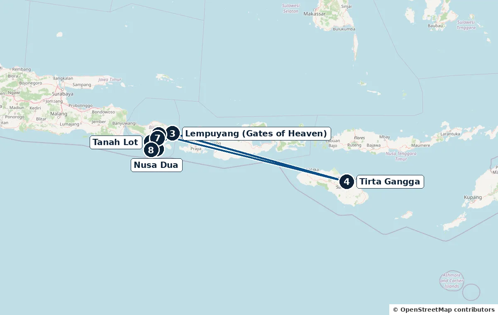
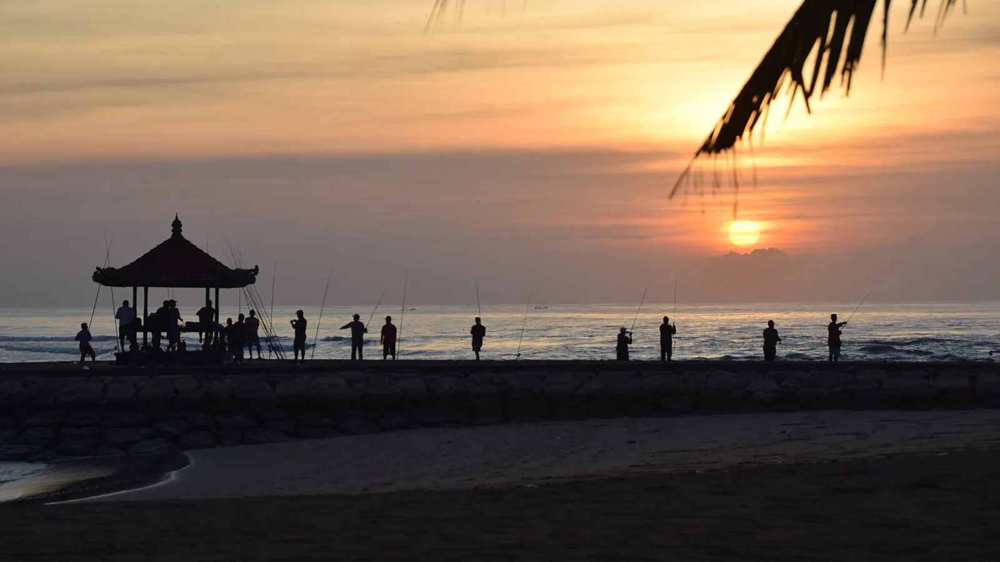
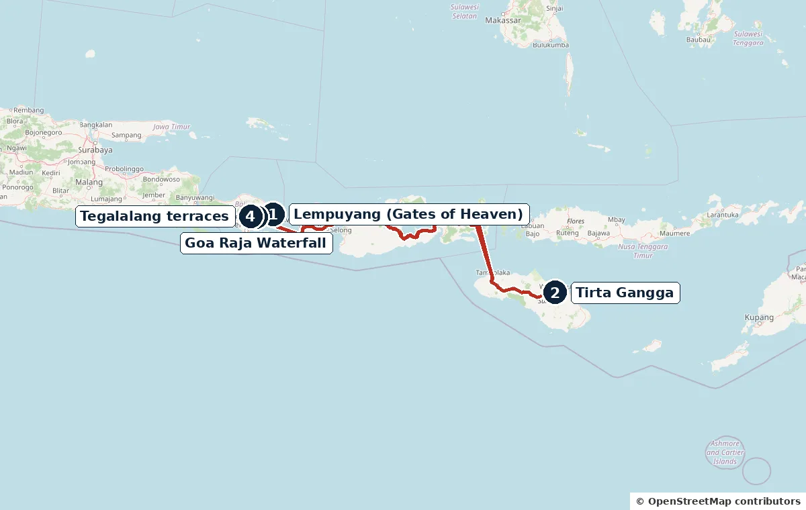
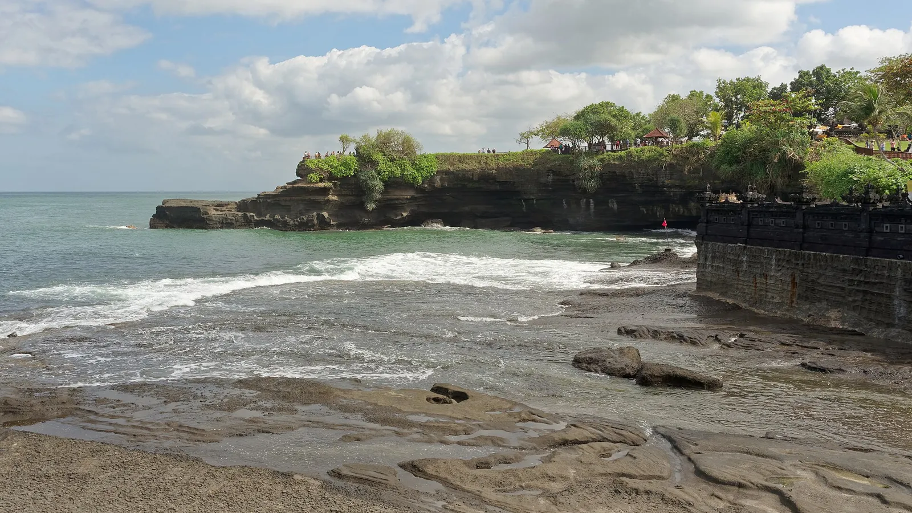
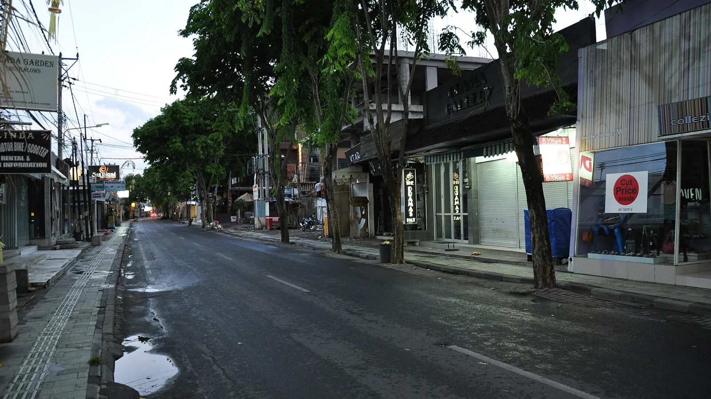
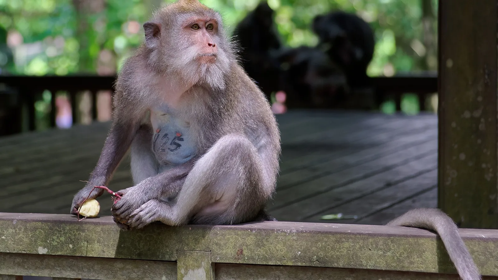
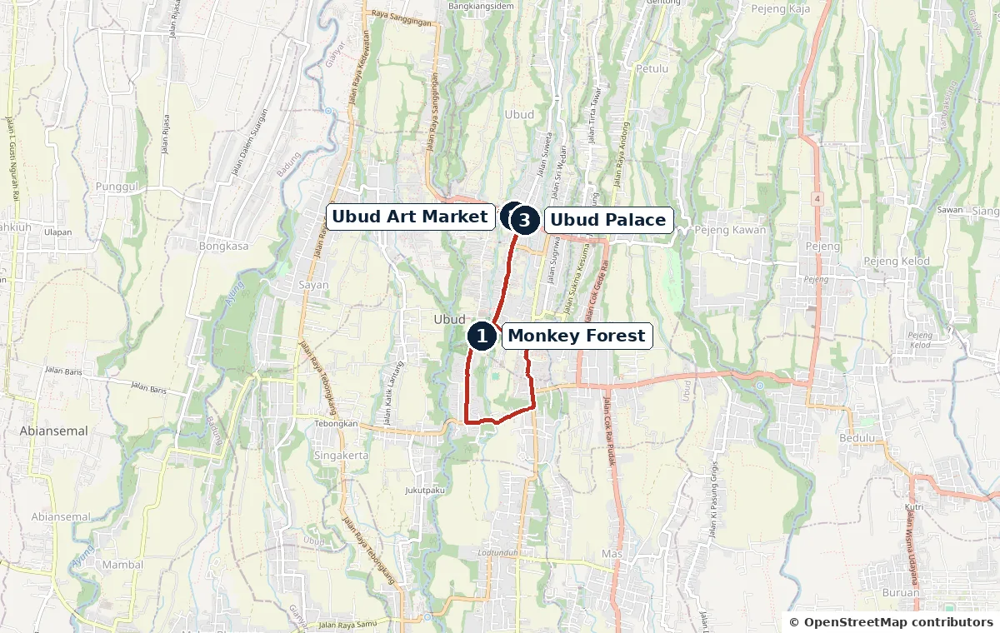
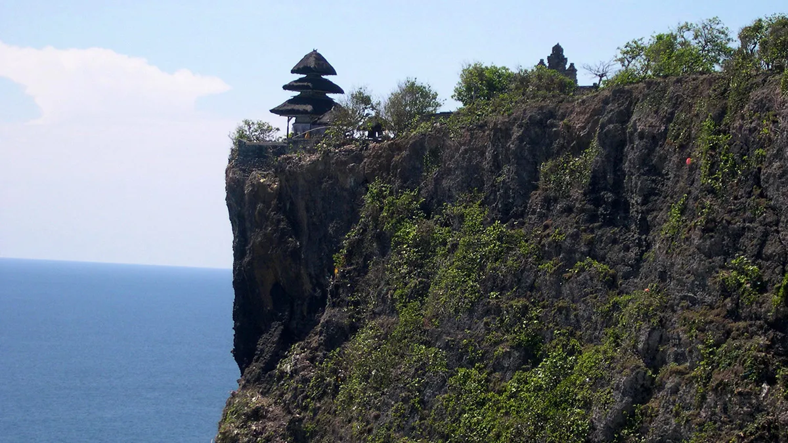
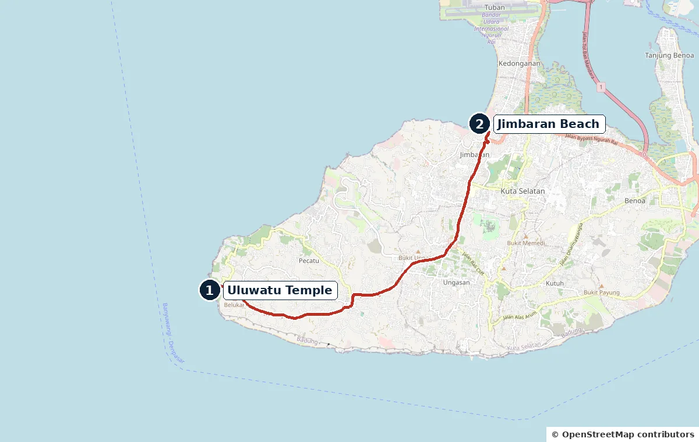

A slow, romantic week that pairs a honeymoon suite in Nusa Dua with Bali's most photogenic temples, a sunset at Tanah Lot, your first scuba dive and a private candlelight dinner in an Ubud garden. Every transfer is private, and every day is paced around Bali's traffic and temple timings, so you spend your time together and not in a car.
Trip highlights
- 6 nights in a Honeymoon Suite at The Crystal Luxury Bay Resort, Nusa Dua, with breakfast and dinner
- Private East Bali photo tour: Lempuyang 'Gates of Heaven', Tirta Gangga Water Palace, Goa Raja Waterfall and Tegalalang Rice Terraces
- Tanah Lot sea temple at sunset
- Discover Scuba Dive for beginners, with an English-speaking instructor beside you
- Private candlelight dinner for two in an Ubud garden
- Private SUV airport transfers and a 24/7 Blue Diamond Voyage travel desk
Your week at a glance
- Day 1Land in Bali and settle into your honeymoon suiteArrival day
- Day 2East Bali: the Gates of Heaven, the water palace and the rice terracesFull day · long drive
- Day 3A slow morning, then Tanah Lot at sunsetEasy day
- Day 4Your first dive: Discover ScubaActivity day
- Day 5Ubud's culture by day, a candlelight dinner by nightFull day
- Day 6A day for the two of you, or Uluwatu's fire danceFree day
- Day 7Breakfast, check-out and the flight homeDeparture

Route: Ngurah Rai International Airport » Nusa Dua » Pura Lempuyang Luhur » Tirta Gangga » Tegalalang Rice Terrace » Tanah Lot » Ubud » Uluwatu Temple
Day-by-day itinerary
Land in Bali and settle into your honeymoon suite

- About 30° / 24°
- Drive about 30 minutes
- Check-in from 14:00
- Dinner at the resort
On landing · Ngurah Rai Airport (DPS)
Immigration, the tourist levy and your driver
Clear immigration and collect your bags. Your private driver waits in the arrivals hall with a name sign. Up to 60 minutes of waiting is included.
CAREIf your visa or levy is not done online, the counters can add 30 to 60 minutes. Do both before you fly.
MONEYThe Bali tourist levy is IDR 150,000 per person, paid once per trip, by card or QRIS only. No cash.
About 30 minutes by private SUV
Drive to Nusa Dua by the Bali Mandara toll road
The toll road crosses the mangroves and is the quickest way south. Evening traffic on the bypass can stretch it to 45 minutes.
From 14:00 · check-in
The Crystal Luxury Bay Resort · Honeymoon Suite
Check in and unpack. Nusa Dua's calm, reef-protected beach is a short drive away, and the resort pools are right outside your room.
MONEYUse a credit card for the deposit at check-in, never a forex or debit card.
Evening
First dinner together at the resort
Keep the first night easy after the flight.
Dinner Included (half board)
On the mapNgurah Rai International AirportThe Crystal Luxury Bay Resort Nusa DuaNusa Dua Beach
East Bali: the Gates of Heaven, the water palace and the rice terraces
- Pick-up about 04:30
- About 2.5 to 3 hours each way
- Sunrise about 06:00
- Back about 18:30
About 04:30 · hotel lobby
Private guide and SUV to East Bali
Sleep in the car. The early start is what beats the photo queue at Lempuyang.
About 07:00 · Lempuyang Temple dress code
Pura Lempuyang · the 'Gates of Heaven' with Mount Agung behind
Cars park at the main terminal, and a shuttle takes you up to the gate. Your turn for the famous photo comes by queue number.
- Visiting hours are about 07:00 to 17:00.
- The photo queue is often two to four hours, and longer after 09:00.
- The ticket office is cash only. Carry small notes.
WEARCovered shoulders, and a sarong for everyone, even over trousers. A basic sarong comes with the ticket.
CAREWomen who are menstruating are traditionally asked not to enter temple grounds. Please respect this.
About 30 minutes' drive
Tirta Gangga Water Palace
The former royal water garden of Karangasem. Walk the stepping stones across the koi ponds. About one hour.
Midday
Lunch on the road in East Bali
Your guide stops at a clean local restaurant. Ask for food cooked fresh to your brief.
Lunch Not included · About IDR 150,000 to 250,000 for two
Afternoon
Goa Raja Waterfall
A cave waterfall in the forest. Wear shoes with grip for the wet steps.
Late afternoon · on the way back
Tegalalang Rice Terraces
Walk the paths along the terraces in the softer evening light.
MONEYFarmers ask a small cash donation on some paths. The jungle swings are a separate, optional charge.
About 18:30
Back at the resort
About 1 hour 15 minutes from Ubud to Nusa Dua, longer in evening traffic.
Dinner Included (half board)

Today's route
- Pura Lempuyang Luhur
- Tirta Ganggaabout 907 km by road
- Goa Raja Waterfallabout 900 km by road
- Tegalalang Rice Terraceabout 24 km by road
On the mapPura Lempuyang LuhurTirta GanggaGoa Raja WaterfallTegalalang Rice Terrace
A slow morning, then Tanah Lot at sunset

- Free until 15:00
- About 1 hour 15 minutes each way
- Sunset about 18:00 to 18:40
- Back about 20:30
Morning
Pools, a late breakfast, or a couples' spa
No alarm today. A Balinese massage is the best cure for yesterday's drive.
About 15:00 · hotel lobby
Private transfer to Tanah Lot
About 1 hour 15 minutes up the west coast.
About 16:30 · Tanah Lot
The sea temple on its rock
Walk the cliff path first, then come down to the shore. Watch the sun set behind the temple from the cliff-top cafés.
CAREOnly Hindu worshippers may climb onto the temple rock. At low tide you can walk to its base and receive holy spring water and a blessing.
TIMELow tide decides how close you can go. We check the tide for your date.
About 20:30
Back at the resort
Dinner Included (half board)
On the mapTanah Lot
Your first dive: Discover Scuba

- About 5 to 6 hours
- No experience needed
- No flying for 18 hours after
Morning pick-up
Discover Scuba Dive with an English-speaking instructor
A short theory lesson and equipment briefing first. Then you dive with your instructor beside you at all times, to see coral, reef fish and, with luck, a sea turtle.
- We choose the dive site for your dates and the sea conditions.
- Nusa Dua and Tanjung Benoa are closest. Nusa Penida or Amed make a day trip.
CAREDivers must be in good health. Tell us about any medical condition, pregnancy or recent surgery before booking.
TIPThis is why the dive sits early in the week: no flying within 18 hours of diving.
Afternoon
Rest by the pool
Dinner Included (half board)
On the mapTanjung Benoa
Ubud's culture by day, a candlelight dinner by night

- About 1 hour 15 minutes each way
- Walking about 3 km
- Dinner from 18:00
Late morning · private transfer
Drive to Ubud, Bali's cultural heart
About 1 hour 15 minutes from Nusa Dua.
About 12:00
Sacred Monkey Forest Sanctuary
Shaded jungle paths, mossy temples and hundreds of long-tailed macaques. About one hour. Entry is paid at the gate.
CAREPut sunglasses, earrings, phones and snacks out of sight. The macaques are quick, and they bite when grabbed.
Afternoon
Ubud Art Market and Ubud Palace
The market and the palace face each other on Jalan Raya Ubud.
BUYSarongs, silver, woven baskets and wood carving. Bargaining is expected, and starting at half the asking price is normal.
Lunch Not included · About IDR 200,000 to 400,000 for two
From 18:00 · two hours included
Private candlelight dinner for two in an Ubud garden
A table set for two among the plants and lanterns. Tell us your menu brief when you book, and the kitchen prepares it.
Dinner Included
After dinner
Private transfer back to Nusa Dua
About 1 hour 15 minutes at night.

Today's route
- Sacred Monkey Forest Sanctuary
- Ubud Art Marketabout 5 km by road
- Ubud Palaceabout 0 km by road
On the mapSacred Monkey Forest SanctuaryUbud Art MarketUbud Palace
A day for the two of you, or Uluwatu's fire dance

- Uluwatu about 30 to 45 minutes
- Sunset about 18:00 to 18:40
- Optional, not included
All day
Beach, spa and resort
Nusa Dua Beach is calm, clean and good for swimming.
Optional · leave about 16:00
Uluwatu Temple on its clifftop
The temple stands on a cliff above the Indian Ocean. Open about 07:00 to 19:00.
MONEYTemple entry is about IDR 60,000 per adult. Cash or QRIS only, no international cards.
CAREUluwatu's monkeys snatch glasses and phones too. Hold on to them on the cliff path.
Optional · around sunset book ahead
Kecak fire dance
A circle of chanting voices tells the Ramayana as the sun goes down behind the dancers.
MONEYAbout IDR 150,000 per adult at the box office. We pre-book seats to save the queue.
TIMEArrive by about 16:30 to 17:00 for a good seat.
Optional · after the dance
Dinner on the sand at Jimbaran Bay
Tables on the beach and the lights of the fishing boats. Vegetarian dishes are cooked to order.
Dinner Half board at the resort, or pay at Jimbaran · About IDR 500,000 to 900,000 for two

Today's route
- Uluwatu Temple
- Jimbaran Beachabout 14 km by road
Breakfast, check-out and the flight home
- Check-out by 12:00
- At the airport 3 hours before
- Drive about 30 to 45 minutes
Morning
Last breakfast and a last swim
Ask for a late check-out if your flight is in the evening. It depends on the day's occupancy.
Breakfast Included
About 4 hours before your flight
Private transfer to Ngurah Rai Airport
Your driver meets you in the lobby. Drivers wait at hotels for about ten minutes, so please be ready.
TIMEAllow extra time on Friday and weekend evenings, when the toll road and the bypass are at their busiest.
On the mapNgurah Rai International Airport
Where you stay
The Crystal Luxury Bay Resort Nusa Dua, Bali
A quiet resort on the Nusa Dua side of the bypass, about 30 minutes from the airport and a short drive from Nusa Dua Beach. Ask us for a beachfront hotel instead if the sand outside your door matters most.
What's included
- 6 nights in a Honeymoon Suite, half board
- Private SUV airport transfers on arrival and departure
- Private East Bali photo tour with guide and entrance fees
- Tanah Lot sunset tour with entrance fee
- Discover Scuba Dive with equipment and instructor
- Candlelight dinner for two in Ubud
- Itinerary planning, bookings and 24/7 support from Blue Diamond Voyage
Not included
- International flights (we can quote from India, the UK or anywhere else)
- Indonesia visa on arrival or e-VOA fee, and the Bali tourist levy
- Sarong donation, jungle swings, rice-terrace donations and personal expenses
- Ubud Monkey Forest entry and the optional Uluwatu evening
- Lunches and drinks unless stated
- Travel insurance (strongly recommended)
Visa, entry and phones
| Permit | What it is | Who | Cost |
|---|---|---|---|
| Indonesia visa | Visa on arrival or e-VOA, 30 days, extendable once | Indian passport holders | About IDR 500,000 per person |
| Bali tourist levy | Paid once per trip, online or at the airport | Every foreign visitor | IDR 150,000 per person |
| Passport | At least 6 months' validity from arrival | Everyone | — |
| Onward ticket | Return or onward flight booking | Everyone | — |
- Apply for the e-VOA on the official Indonesian immigration site before you fly. It skips the visa queue at the airport.
- Pay the tourist levy on the official Love Bali site. The QR voucher arrives by email. Keep it on your phone.
- Phone and internet: a Bali eSIM bought before you fly works the moment you land and keeps your own number for WhatsApp. A local tourist SIM at the airport is cheaper but needs your passport. Home-carrier roaming is simplest and dearest.
NOTEWhen you book, we arrange the paperwork with you and share every document on your trip's WhatsApp group before departure.
Good to know
Hotel deposit
Use a credit card for the deposit or pre-authorisation at check-in, never a forex or debit card. Forex cards cannot hold funds, hotels often refuse them, and a credit card hold is released faster and more safely.
Cards and cash
On card machines, always choose to pay in Indonesian rupiah, never in INR or USD. Carry cash for temples, donations, markets and small cafés: about IDR 500,000 a day for two is plenty. Exchange at authorised money changers or use bank ATMs inside malls and hotels.
Tipping
Many restaurants add a 5 to 10% service charge. Round up for drivers and guides at the end of a good day. It is appreciated, not expected.
Temple dress code
Covered shoulders and knees, with a sarong and a sash at the waist. Do not stand higher than the priest, step over offerings on the ground or point your feet at shrines.
Monkeys and pickpockets
Hold on to glasses, phones and earrings at Uluwatu and the Ubud Monkey Forest. Bag snatching from scooters happens in Kuta and Seminyak: walk with your bag on the side away from the road.
Plugs, water and meal times
Plugs are the two round-pin type C and F, at 230 volts. Indian three-pin plugs need an adaptor. Drink bottled or filtered water only, including for brushing teeth. Dinner runs from about 18:00 to 22:00.
Days to avoid
Nyepi, Bali's Day of Silence, closes the airport, roads and beaches for 24 hours. In 2027 it falls on Monday 8 March. We plan around it.
In an emergency
Indonesia emergency 112 (police 110, ambulance 118 or 119)
Consulate General of India, Bali Jl. Raya Puputan 163, Renon, Denpasar · +62 361 259504 · +62 813 5384 6936 · Mon to Fri 09:00 to 17:30
Blue Diamond Voyage 24/7 +91 98242 21400
Vegetarian and Jain dining
Your resort serves breakfast and dinner, and we send your dietary brief to the kitchen before you arrive. For the meals out, these are places where you can order to a vegetarian or Jain brief.
Queens of India, Nusa Dua
Open daily, 12:00 to 23:00
EATDal tadka with a jeera tadka, paneer tikka, jeera rice and tandoori roti. For Jain, ask for no onion, garlic, ginger or potato, cooked fresh.
Zest Ubud
Open daily, 08:00 to 22:00 · +62 823 4006 5048
EATBowls, salads and wood-fired dishes. Ask for them without garlic and onion if you eat Jain.
CAREMost Balinese food starts with a spice paste of shallot, garlic and ginger, and sambal and many sauces contain shrimp paste (terasi). Nasi goreng, mie goreng and gado-gado are not Jain. Always ask for food cooked fresh: sauces are made ahead.
Your food card · show this to the waiter
Bahasa IndonesiaKami vegetarian ketat (Jain). Kami tidak makan daging, ayam, ikan, makanan laut, atau telur. Kami juga tidak makan bawang merah, bawang putih, bawang bombay, jahe, kentang, wortel, ubi, bit, jamur, atau umbi lainnya. Tanpa terasi dan tanpa saus ikan. Mohon dimasak segar. Terima kasih.
Hindi, for Indian restaurantsJain khana: pyaz, lahsun, adrak, aloo, gajar nahi. Taaza banaiye, please.
Best time to go
April to October is the dry season, with sunny days and calm seas for the beaches, temples and diving. November to March is the wet season: greener and quieter, with short tropical showers, usually in the afternoon. Avoid Nyepi, Bali's Day of Silence in March, when the airport and roads close for 24 hours.
| April to October | Dry season | About 30° / 23°, sunny, calm seas. The best months for diving and East Bali views of Mount Agung. |
| July, August, Christmas | Peak | Book hotels and the Lempuyang tour early. Queues are longest. |
| November to March | Wet season | About 31° / 24°, humid, short afternoon showers. Greener, quieter and better hotel availability. |
Frequently asked questions
When is the best time for a honeymoon in Bali?
April to October is the dry season, with sunny days and calm seas, ideal for beaches, temples and diving. November to March is the wet season. It's greener and quieter, with short tropical showers, usually in the afternoon.
Is Nusa Dua or Ubud better for a honeymoon?
Nusa Dua offers calm beaches and resorts, while Ubud offers jungle villas, rice terraces and culture. This itinerary bases you in Nusa Dua and takes you to Ubud for a day and a romantic dinner. We can also split your stay, for example 3 nights in Ubud and 3 in Nusa Dua.
Do Indian citizens need a visa for Bali?
Indian passport holders can get a visa on arrival or apply online for an e-VOA before travel, for about IDR 500,000 per person, valid for 30 days. Your passport needs at least 6 months' validity. Every foreign visitor also pays the Bali tourist levy of IDR 150,000 once per trip.
Can this itinerary be customised?
Yes. Every Blue Diamond Voyage itinerary is a starting point. We change hotels, add Nusa Penida, the Gili Islands or a private pool villa, and plan flights from your city.
Is vegetarian or Jain food available in Bali?
Yes. Bali has many vegetarian and Indian restaurants, especially in Ubud, Seminyak and Nusa Dua. Tell us your dietary needs and we inform the resort in advance and choose restaurants for you. We also give you a food card in Bahasa Indonesia to show the waiter.
How long is the drive to the Gates of Heaven?
About 2.5 to 3 hours each way from Nusa Dua. That is why the East Bali day starts at about 04:30: you reach Lempuyang near opening time, before the photo queue grows.
Photo and map credits
- Day 1: GdML, CC BY-SA 4.0, via Wikimedia Commons
- Day 3: Jakub Hałun, CC BY-SA 4.0, via Wikimedia Commons
- Day 4: Jorge Láscar from Melbourne, Australia, CC BY 2.0, via Wikimedia Commons
- Day 5: Jakub Hałun, CC BY-SA 4.0, via Wikimedia Commons
- Day 6: Ken Eckert, CC BY-SA 4.0, via Wikimedia Commons
- Maps: © OpenStreetMap contributors; road routes by OSRM. Distances are by road; drive times on this page allow for local traffic.
Make this journey yours
Every Blue Diamond Voyage itinerary is a starting point. Tell us your dates, your city and how you like to travel, and we shape the hotels, the pace and the food around you. Timings and local details were checked on 21 November 2026 and are reconfirmed for your dates when you book.